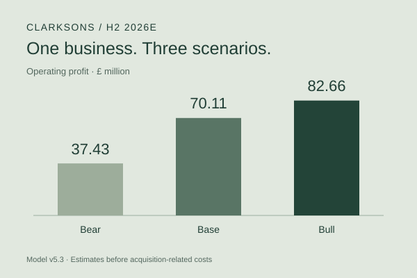

The question
How much of a strong first half could carry into H2?
I wanted to understand Clarksons as a business before making a forecast. I studied how each segment earns money, compared the reported revenue and profit, and tested which assumptions would matter most for the second half of 2026.
I built the Excel model with AI assistance, checked the assumptions against the filings, and kept a correction log. This is independent student work, not a model prepared for or endorsed by Clarkson PLC.

Three scenarios, with the assumptions visible.
Snapshot: 27 September 2026, model v5.3. All H2 and full-year figures below are estimates. Operating profit is before acquisition-related costs; those costs are not forecast, so statutory profit would be lower.
| Scenario | H2 revenue | H2 op. profit | H2 margin | FY op. profit | FY ROIC |
|---|---|---|---|---|---|
| Base | £458.62m | £70.11m | 15.29% | £126.91m | 28.13% |
| Bull | £499.71m | £82.66m | 16.54% | £139.46m | 30.72% |
| Bear | £388.49m | £37.43m | 9.63% | £94.23m | 20.97% |
Source: final workbook, each scenario’s D6, D71, D10, E9 and D47; Appendix §3. ROIC uses the model’s weighted three-date average invested capital. Figures are rounded for display.
The Base case gives H2 operating profit of £70.11m. That number is sensitive to my disruption assumption: reducing its weight from 0.5 to zero lowers the result to £60.85m. I would read the range and its drivers before relying on the Base case.
01 / Industries
Understand what the company is paid for.
I began with Broking, Financial, Support and Research. Their revenue comes from different activities: arranging shipping transactions, financing and advisory work, port services and supplies, and research subscriptions or specialist services. The company’s business-model page helped me connect those activities to the reported segments.
In shipping, vessel owners provide capacity and charterers or cargo owners need transport. Shipyards provide new vessels; banks and investors provide funding. Brokers help arrange transactions between these groups. The research files map these roles rather than establish a ranked list of Clarksons’ suppliers or customers. Stegra is one named customer example in the company’s published business-model material.
For Broking, the useful question is how transaction values, activity and commissions change. An oil-price move on its own does not answer that. My oil-price note made me look separately at freight rates, route disruption, ship sales and newbuilding activity. This is why I put industry work before the figures.
The 13-week liquidity project asked a related question from a different angle: how business activity becomes a cash requirement.
02 / Finance
Turn the question into a model I can explain.
The goal was to estimate how different H2 conditions could affect revenue, operating profit, net cash and ROIC. I used segment-level growth assumptions and flow-through margins: the change in operating profit divided by the change in revenue. That let me distinguish the businesses instead of applying one group margin.
In Base and Bull, the Broking build has two layers. The first keeps organic revenue flat against H1 and adds the effect of owning Link for a full half-year. The second adds a disruption scenario, using a weight of 0.5 in Base and 1.0 in Bull. Bear uses an 8% decline in Broking revenue without that additional layer. These are my assumptions, not probabilities.
I moved from reported inputs to assumptions, segment calculations, head-office costs, FX and credit losses, then into receivables and cash. I also tested the disruption weight while holding the other Base assumptions constant.
| Escalation weight | H2 operating profit | FY ROIC |
|---|---|---|
| 0.00 | £60.85m | 26.15% |
| 0.25 | £65.48m | 27.14% |
| 0.50 | £70.11m | 28.13% |
| 0.75 | £74.74m | 29.12% |
| 1.00 | £79.37m | 30.11% |
Source: Summary B56:F60, linked to Base Case rows 119–135. Weight 1.0 here is not the complete Bull case: the other inputs remain at Base.
The main risk is overlap: retaining H1’s elevated Broking revenue and adding another disruption layer may count part of the same effect twice. The weight is a judgment and the source data cannot isolate every cause of the H1 increase.
03 / Data
Check the inputs, their dates and their meaning.
I used annual and interim disclosures for the financial figures and kept news-based assumptions separate. The model labels filing inputs, calculations and my estimates. The appendix explains the source choices, and the correction log records changes rather than hiding earlier mistakes.
Two checks mattered especially. H1 2025 Broking revenue was £222.2m; £253.8m was the H2 figure and was the wrong comparison. Receivables also included short-term settlement balances, so the model separates these from the balances used in the cash calculation.
I used the scenario table, sensitivity table and Bull–Base profit bridge to see which choices changed the answer. The exploratory regression workbook was part of the preparation, but its four mixed annual and half-year observations per segment are too limited to establish a reliable forecasting relationship. The research-file description also identifies an incorrect sentence about its confidence interval.
For this portfolio summary, the headline revenue, profit and ROIC arithmetic was checked against the workbook’s saved results, and the financial anchors were compared with the 2026 interim report and 2025 financial review. This is not a new full audit or an Excel recalculation of every formula.
My DCF Analyzer taught me the same practical lesson: an output is easier to trust when its inputs and assumptions can be inspected.
04 / Automation
Keep following the results after the forecast.
The supplied news log records company and market developments between results releases. It is research preparation; there is no demonstrated automated refresh of this Excel model in the supplied files.
When H2 actuals are published, I plan to compare segment revenue, operating profit on the same basis, receivables and net cash with each scenario. I will separate differences caused by activity, margins, FX, acquisitions and credit losses, then record what I would change for H1 2027.
My n8n research workflow offers a possible way to collect new links and flag items for review. Connecting it to this project is a next step. I would still read the original source and approve assumption changes myself.
Current limits include the uncertain Link segment split, simplified acquisition and cash assumptions, and a cash-conversion estimate based on one comparable half-year. H2 2026 has not finished, so the model’s forecast accuracy is not yet measurable.
05 / What I learnt from it
What the numbers made me reconsider.
| What changed my approach | Evidence | What I took from it |
|---|---|---|
| The result depends on the disruption assumption. | Base H2 operating profit: £60.85m at weight 0 → £70.11m at 0.5. Difference: £9.26m. | Show the assumption’s effect instead of presenting one forecast as certain. Model estimate; Summary B57, D57 and B61. |
| Higher and lower revenue need separate tests. | Observed Broking flow-through: 26.1% in H1 2025–H1 2026 growth; 53.8% in FY2024–FY2025 decline. | Test downside separately. These are two historical comparisons, not proof of a permanent cost rule. Appendix §6. |
| Credit losses must reach the profit calculation. | The review log records Bull H2 profit falling from £84.46m to £82.66m and Bear from £41.23m to £37.43m after the extra charge was included. | Trace each assumption to the output it should change. These are corrections to estimates, not business losses I caused or prevented. Log #44. |
| A large scenario gap can depend on a small number of choices. | Broking contributes £8.98m, or 71.5%, of the £12.55m Bull–Base operating profit gap. | Spend review time on the assumptions that drive the difference. Summary D66, E66 and D73. |
| Review needs a record. | 48 logged items: 42 fixed, 1 superseded, 5 noted limitations. 17 raised by me and 31 through AI-assisted review. | Keep the reason and source for each change. These counts describe the review, not a measured gain in forecasting accuracy. Correction log, p.1. |
I have not measured time savings or an improvement in forecast accuracy. The evidence here is the size of the scenario changes, the historical comparisons and the documented corrections.
Project files
The model, its reasoning and its review.
Three parts of the same project. The original uploaded files are provided unchanged.
H2 2026 scenario model
I built Base, Bull and Bear cases from the four reporting segments, then linked revenue and operating profit to receivables, net cash and return on invested capital. The workbook includes the assumptions, scenario charts, a sensitivity table and a profit bridge.
How it fits: The main calculation file. Start with Summary, then inspect each scenario sheet.
Reading note: Figures marked 2026E are my estimates. Operating profit excludes acquisition-related costs, so it is not a statutory profit forecast.
Download workbookModel appendix
I explain why I chose the assumptions, how the two-layer Broking calculation works, and how FX, credit losses and working capital affect the results. The appendix also records the open questions.
How it fits: Read beside the workbook to trace the reasoning behind the formulas.
Reading note: The escalation weight is my judgment, not a fitted probability or a company forecast. Its effect is shown across weights from 0 to 1.
Read PDFCorrection & review log
I kept a record of what was wrong, how it changed and which source supported the change. The log contains 48 items across nine review rounds, including issues I raised and issues found through AI-assisted review.
How it fits: Shows how the model developed, including the changes to credit losses, FX, cash conversion and source references.
Reading note: The log reports 42 fixed, one superseded and five noted limitations. These are review records, not a claim that every remaining model risk has been removed.
Read PDFThe research behind the model.
Seven supporting files cover the business model, segment economics, regression, oil prices and company news. Each has its own description, its role in the project and a reading note.
Read the research files